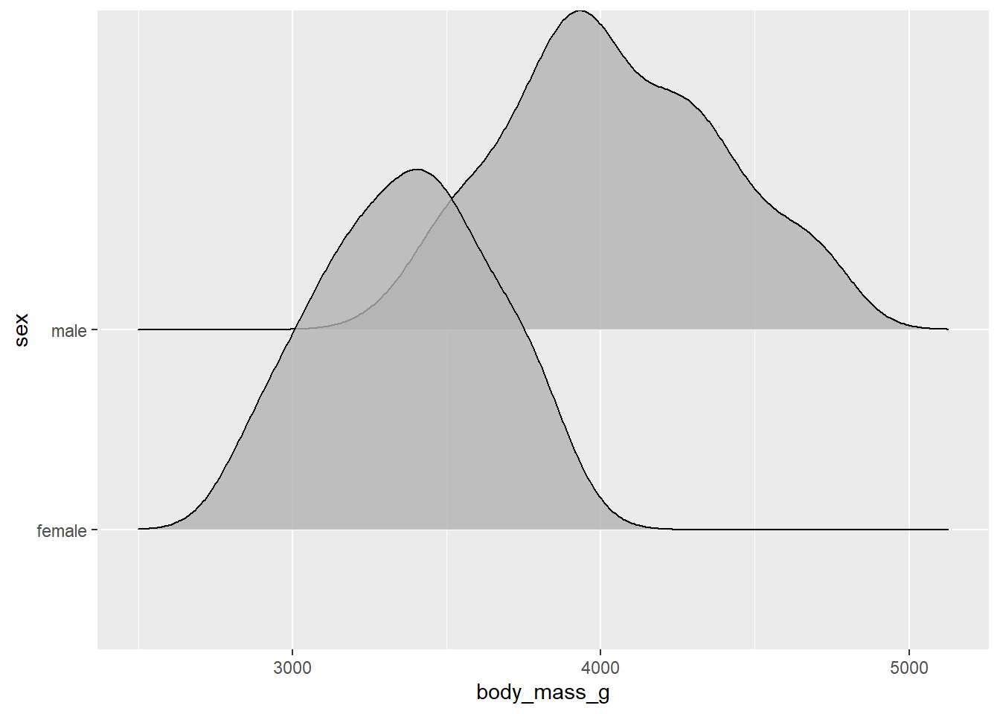
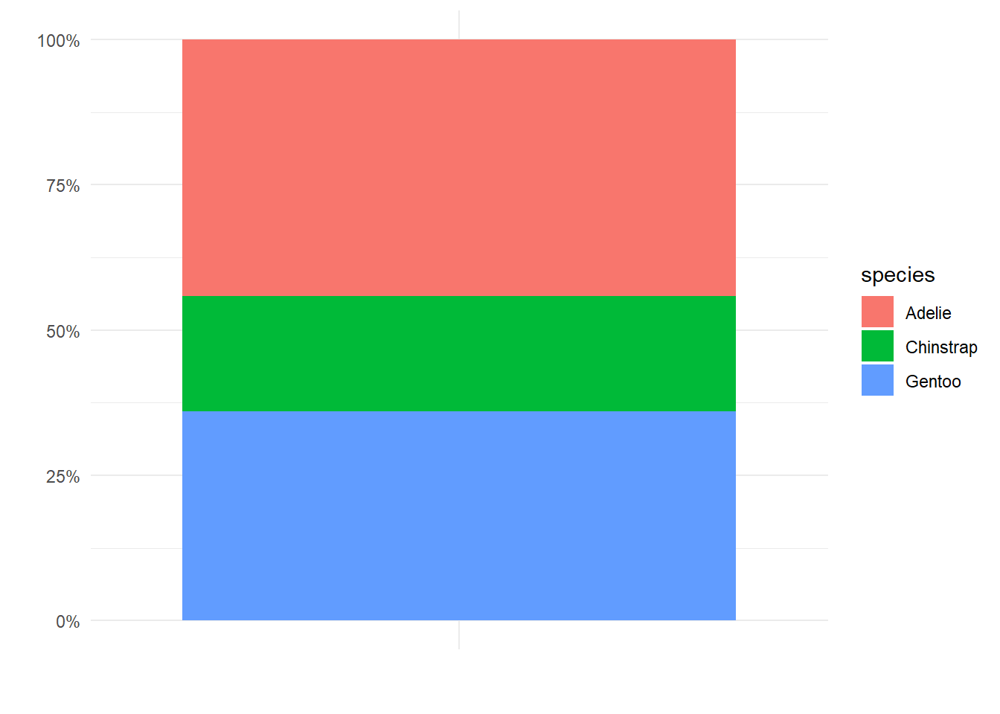
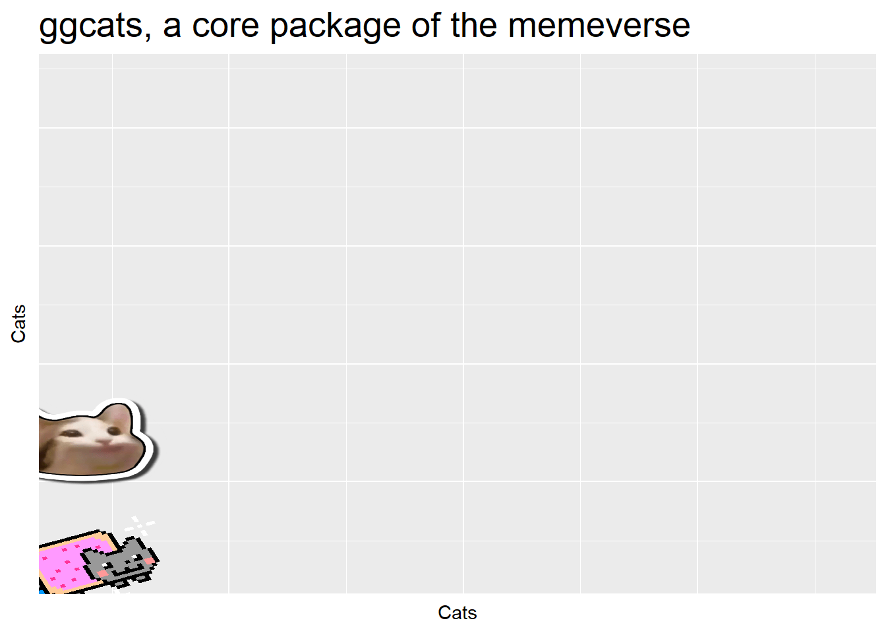

Chapter 10 Deeper data insights part 1: Week Ten
In these last chapters on generating data insights we are going to cover
Types of variable
Exploring numeric variables
Exploring categorical variables
Dealing with missing data
Before we dive into this it is important to understand where this data has come from, is it a single study? Is it a lab experiment, fieldwork survey, exploratory work or from a carefully designed study?
You should also play close attention to the data, and remind yourself frequently how many variables do you have and what are their names? How many rows/observations do you have?
10.1 Variables
10.1.1 Numerical
You should already be familiar with the concepts of numerical and categorical data. Numeric variables have values that describe a measure or quantity. This is also known as quantitative data. We can subdivide numerical data further:
Continuous numeric variables. This is where observations can take any value within a range of numbers. Examples might include body mass (g), age, temperature or flipper length (mm). While in theory these values can have any numbers, within a dataset they are likely bounded (set within a minimum/maximum of observed or measurable values), and the accuracy may only be as precise as the measurement protocol allows.
Discrete numeric variables Observations are numeric but restricted to whole values e.g. 1,2,3,4,5 etc. These are also known as integers. Discrete variables could include the number of individuals in a population, number of eggs laid etc. Anything where it would make no sense to describe in fractions e.g. a penguin cannot lay 2 and a half eggs. Counting!
10.1.2 Categorical
Values that describe a characteristic of data such as ‘what type’ or ‘which category.’ Categorical variables are mutually exclusive - one observation should not be able to fall into two categories at once - and should be exhaustive - there should not be data which does not fit a category (not the same as NA - not recorded). Categorical variables are qualitative, and often represented by non-numeric values such as words. It’s a bad idea to represent categorical variables as numbers (R won’t treat it correctly). Categorical variables can be defined further as:
Ordinal variables Observations can take values that can be logically ordered or ranked. Examples include - activity levels (sedentary, moderately active, very active); size classes (small, medium, large).
Nominal variables Observations that can take values that are not logically ordered. Examples include Species or Sex in the Penguins data.
It is important to order Ordinal variables in the their logical order value when plotting data visuals or tables. Nominal variables are more flexible and could be ordered in whatever pattern works best for your data (perhaps you could order them according to the values of another numeric variable).
Don’t use numbers to describe categorical information e.g. (Adelie = 1, Gentoo =2, Chinstrap = 3). This can be done, but it isn’t usually very sensible. It’s clearer to use the words themselves, and helps when making tables and graphs later.
It’s easy to assign levels to categorical data:
Example:
penguins <- penguins %>% mutate(species = factor(species, levels = c(“Adelie,” “Gentoo,” “Chinstrap”)))
10.2 Understanding Numerical variables
Let’s take a look at some of our variables
glimpse(penguins)## Rows: 344
## Columns: 9
## $ species <chr> "Adelie", "Adelie", "Adelie", "Adelie", "Adelie",...
## $ island <chr> "Torgersen", "Torgersen", "Torgersen", "Torgersen...
## $ bill_length_mm <dbl> 39.1, 39.5, 40.3, NA, 36.7, 39.3, 38.9, 39.2, 34....
## $ bill_depth_mm <dbl> 18.7, 17.4, 18.0, NA, 19.3, 20.6, 17.8, 19.6, 18....
## $ flipper_length_mm <dbl> 181, 186, 195, NA, 193, 190, 181, 195, 193, 190, ...
## $ body_mass_g <dbl> 3750, 3800, 3250, NA, 3450, 3650, 3625, 4675, 347...
## $ sex <chr> "male", "female", "female", NA, "female", "male",...
## $ date <chr> "11/11/2007", "11/11/2007", "16/11/2007", "16/11/...
## $ penguin_id <chr> "N1A1", "N1A2", "N2A1", "N2A2", "N3A1", "N3A2", "...We can see that bill length contains numbers, and that many of these are fractions, but only down to 0.1mm. By comparison body mass all appear to be discrete number variables. Does this make body mass an integer? The underlying quantity (bodyweight) is clearly continuous, it is clearly possible for a penguin to weigh 3330.7g but it might look like an integer because of the way it was measured. This illustrates the importance of understanding the the type of variable you are working with - just looking at the values isn’t enough.
On the other hand, how we choose to measure and record data can change the way it is presented in a dataset. If the researchers had decided to simply record small, medium and large classes of bodyweight, then we would be dealing with ordinal categorical variables. These distinctions can become less clear if we start to deal with multiple classes of ordinal categories - for example if the researchers were measuring body mass to the nearest 10g. It might be reasonable to treat these as integers…
10.2.1 Graphing a numeric variable
adelie_penguins <- penguins %>%
filter(species=="Adelie")
adelie_summary <- adelie_penguins %>%
summarise(mean=mean(body_mass_g,
na.rm=TRUE))
ggplot()+
geom_histogram(data= adelie_penguins,
aes(x=body_mass_g),
bins=10)+ #remember it is a good idea to try multiple bins of data
geom_vline(data=adelie_summary,
aes(xintercept=mean),
colour="red",
linetype="dashed")
Using this distribution, we can see that the data appears to fit a normal/gaussian distribution - mean body mass is slightly under 3750g. Penguins smaller than 3000g are rare.
10.2.2 Insights about body mass
The histogram gives us a nice summary of the sample distribution of the body_mass_g variable. It reveals (1) the most common values, (2) the range of values and (3) the shape of the distribution. Remember it’s a very good idea to play with the number of bins in order to see whether this changes the shape of the histogram.
Let’s construct the histogram again with 30 bins. As well we will make some other tweaks.
ggplot()+
geom_histogram(data=adelie_penguins,
aes(x=body_mass_g),
bins=50, # fifty bins
fill="steelblue",
colour="darkgrey",
alpha=0.8)+
labs(x="Body mass (g) of Adelie penguins",
y = "Count")
Changing the colours and labels is purely aesthetic, and not needed at all for data exploration, but look how pretty!
What is important is that increasing the number of bins indicates that their might be two peaks in our data. We should think carefully about the other variables (probably categorical) that could be used to subset our data to investigate this. This requires careful thought about our data - in this instance - it seems sensible to try and see whether splitting the data by sex accounts for this
adelie_penguins %>%
drop_na(sex) %>%
ggplot()+
geom_histogram(aes(x=body_mass_g,
fill=sex),
bins=50, # fifty bins
colour="darkgrey",
alpha=0.8,
position="identity")+
labs(x="Body mass (g) of Adelie penguins",
y = "Count")Let’s finish this section by looking at density. This is sensible to use when we have “large datasets,” and also allows us to make comparisons between groups with different sample sizes.
adelie_penguins %>%
drop_na(sex) %>%
ggplot()+
geom_density(aes(x=body_mass_g,
fill=sex),
colour="darkgrey",
alpha=0.8,
position="identity")+
labs(x="Body mass (g) of Adelie penguins",
y = "Count")Or we can use one of my favourite packages ggridges Wilke (2021) which let’s us separate out different groups along the y-axis.
adelie_penguins %>%
drop_na(sex) %>%
ggplot()+
ggridges::geom_density_ridges(aes(x=body_mass_g,
y=sex),
alpha=0.8)
10.3 Descriptive statistics
We have, so far, been spending our time describing the properties of data by examining graphs. Now we can start to build accurate and specific terms to the descriptions of our data.
central tendency describes the typical (central) value of a distribution. The most well known description of central tendency is the arithmetic mean, however you should be comfortable with the idea that the median may be a better representation of the central tendency for some data distributions
dispersion describes how a distribution is spread out. Dispersion measures the variability or scatter of a variable. If one distribution is more dispersed than another, this means that in some sense it encompasses a wider range of values. Basic statistics courses often tend to focus on variance adn the standard deviation as two ways to measure/sumamrise dispersion. However, the interquartile range is another method often used in exploratory analysis.
In the next section we will use the median and interquartile ranges as effective measures of central tendency and dispersion - we will use graphics for this - and more specifically look at boxplots.
10.3.1 Central tendency
We can find both the mean and median easily with the summarise function.
penguin_body_mass_summary <- penguins %>%
summarise(mean_body_mass=mean(body_mass_g, na.rm=T),
median_body_mass=median(body_mass_g, na.rm=T))
penguin_body_mass_summary## # A tibble: 1 x 2
## mean_body_mass median_body_mass
## <dbl> <dbl>
## 1 4202. 4050
If we do this for the entire penguins dataset - we can clearly see that the mean value has bee significantly “right-shifted” by the long tail of the data distribution. However,this is much less apparent for the median. In this way we can say that the median is less sensitive to the distribution of the data than the mean is.
10.3.2 Dispersion
Dispersion (how spread out the data is) is an important component towards understanding any numeric variable. Important measures for statistics are variance and standard deviation. These are both non-negative, smaller values indicate observations tend to be similar in value, while high values indicate these observations are more spread out. We can quickly calculate these with var and sd - but they probably aren’t the best place to start exploring your data from.
Variance is not an intuitive measure - calculated from squaring the deviation of each data point from the sample mean - it gives no overall insight into the shape of the distribution, and it is on a different scale to the original measurements. Standard deviation is the square root of the variance. This means it is on the same scale as the observation, making it easier to interpret, but just like variance it doesn’t provide much insight into the overall shape of the distribution, and like the mean can be affected by outliers.
When trying to understand data it can be simpler and easier to use a measure that does not suffer from these issues outlined above. Instead we can use the interquartile range.
The interquartile range (IQR) is the range that contains the “middle 50%” of our data sample. This is given as the difference between the third and first quartiles. The reason we like to use the IQR is that the more spread out the data is, the larger the IQR. It will also indicate the shape of the distribution and is less affected by outliers than variance.
We can use the IQR function to find the interquartile range of the body mass variable
penguins %>%
summarise(IQR_body_mass = IQR(body_mass_g, na.rm=TRUE))The IQR is also useful when applied to the summary plots ‘box and whisker plots.’ We can also calculate the values of the IQR margins, and add labels with scales Wickham and Seidel (2020).
penguins %>%
summarise(q_body_mass = quantile(body_mass_g, c(0.25, 0.5, 0.75), na.rm=TRUE),
quantile = scales::percent(c(0.25, 0.5, 0.75))) # scales package allows easy converting from data values to perceptual properties# A tibble: 3 x 2
q_body_mass quantile
<dbl> <chr>
1 3550 25%
2 4050 50%
3 4750 75% We can see for ourselves the IQR is obtained by subtracting the body mass at tht 75% quantile from the 25% quantile (4750-3550 = 1200).
10.3.3 Visualising dispersion
penguins %>%
ggplot()+
geom_boxplot(aes(x="",
y= body_mass_g),
fill="darkorange",
colour="steelblue",
width=0.4)+
labs(x= "Bodyweight",
y = "Mass (g)")+
theme_minimal()
Figure 10.1: A boxplot of the body mass variable showing the medan and IQR
**Note - we forced ggplot2 to hide the tick mark label on the x axis by coding a dummy label with x = " "
We now have several compact representations of the body_mass_g including a histogram, boxplot and summary calculations. You can and should generate the same summaries for your other numeric variables. These tables and graphs provide the detail you need to understand the central tendency and dispersion of numeric variables.
10.3.4 Combining histograms and boxplots
library(patchwork) # put this at the TOP of your script
penguins_na_sex <- penguins %>%
drop_na(sex)
colours <- c("darkorange", "cyan") # set colour scheme here to save on repeating code
lims <- c(3000,6000) # set axis limits here to save on repeating code
p1 <- ggplot(data = penguins_na_sex,
aes(x = species,
y = body_mass_g,
fill = sex))+
geom_boxplot()+
scale_fill_manual(values = colours)+
scale_y_continuous(limits=lims)+
labs(x="",
y="")+
coord_flip()+ # rotate box plot 90 degrees
theme_minimal()+
theme(legend.position="none")
p2 <- ggplot(data = penguins_na_sex,
aes(x = body_mass_g,
y = species,
fill = sex))+
ggridges::stat_density_ridges(quantile_lines = TRUE)+
scale_fill_manual(values = colours)+
scale_x_continuous(limits=lims)+
labs(y="",
x = "Body Mass (g)")+
theme_minimal()
(p1/p2) # patchwork command to layer one plot above the other
Figure 10.2: This figure shows the use of patchwork to combine two ggplots, demonstrating the boxplot and geom density figures show the same distributions of the data
10.3.5 Missing values
We first met NA back in Chapter 3.7.8 and you will hopefully have noticed, either here or in those previous chapters, that missing values NA can really mess up our calculations. There are a few different ways we can deal with missing data:
drop_na()on everything before we start. This runs the risk that we lose a lot of data as every row, with an NA in any column will be removeddrop_na()on a particular variable. This is fine, but we should approach this cautiously - if we do this in a way where we write this data into a new object e.g.penguins <- penguins %>% drop_na(body_mass_g)then we have removed this data forever - perhaps we only want to drop those rows for a specific calculation - again they might contain useful information in other variables.drop_na()for a specific task - this is a more cautious approach but we need to be aware of another phenomena. Is the data missing at random? You might need to investigate where your missing values are in a dataset. Data that is truly missing at random can be removed from a dataset without introducing bias. However, if bad weather conditions meant that researchers could not get to a particular island to measure one set of penguins that data is missing not at random this should be treated with caution. If that island contained one particular species of penguin, it might mean we have complete data for only two out of three penguin species. There is nothing you can do about incomplete data other than be aware that data not missing at random could influence your distributions.
10.4 Categorical variables
Ok that was a lot of information - well done - have some praise.
praise::praise()
# have some praiseNow let’s look at categorical variables -remember these can be ordinal or nominal. We don’t have anything we would classify as ordinal data in the penguins dataset.
We can look at species with the function distinct:
penguins %>%
distinct(species)# A tibble: 3 x 1
species
<chr>
1 Adelie
2 Gentoo
3 ChinstrapWe can clearly see there would be no sense to applying an order to these three categories, we can order them in whatever way suits best when presenting our data.
10.4.1 Summaries
penguins %>%
count(species, sort=TRUE)# A tibble: 3 x 2
species n
<chr> <int>
1 Adelie 152
2 Gentoo 124
3 Chinstrap 68It might be useful for us to make some quick data summaries here
prob_obs_species <- penguins %>%
count(species, sort=TRUE) %>%
mutate(prob_obs = n/sum(n))
prob_obs_species## # A tibble: 3 x 3
## species n prob_obs
## <chr> <int> <dbl>
## 1 Adelie 152 0.442
## 2 Gentoo 124 0.360
## 3 Chinstrap 68 0.198So about 44% of our sample is made up of observations from Adelie penguins. When it comes to making summaries about categorical data, that’s about the best we can do, we can make observations about the most common categorical observations, and the relative proportions.
penguins %>%
ggplot()+
geom_bar(aes(x=species))
This chart is ok - but can we make anything better?
We could go for a stacked bar approach
penguins %>%
ggplot(aes(x="",
fill=species))+ # specify fill = species to ensure colours are defined by species
geom_bar(position="fill")+ # specify fill forces geom_bar to calculate percentages
scale_y_continuous(labels=scales::percent)+ #use scales package to turn y axis into percentages easily
labs(x="",
y="")+
theme_minimal()
This graph is OK but not great, the height of each section of the bar represents the relative proportions of each species in the dataset, but this type of chart becomes increasingly difficult to read as more categories are included. Colours become increasingly samey,and it is difficult to read where on the y-axis a category starts and stops, you then have to do some subtraction to work out the values.
The best graph is then probably the first one we made - with a few minor tweak we can rapidly improve this.
penguins %>%
mutate(species=factor(species, levels=c("Adelie",
"Gentoo",
"Chinstrap"))) %>% # set as factor and provide levels
ggplot()+
geom_bar(aes(x=species),
fill="steelblue",
width=0.8)+
labs(x="Species",
y = "Number of observations")+
geom_text(data=prob_obs_species,
aes(y=(n+10),
x=species,
label=scales::percent(prob_obs)))+
coord_flip()+
theme_minimal()
10.5 Summing up
In this chapter we have really focused on single variables, understanding variable types and their distributions. We learned
About different types of data
How to estimate central tendencies
Dispersions of numeric and categorical variables
How to visualise metrics
You have primarily used tidyverse packages, but also:
scalesWickham and Seidel (2020)
In the next chapter we will look at generating insights around the relationships between variables. Now is a good time to review earlier chapters such as Chapter 3, and think about how we ask questions of our data.
10.5.1 Reward
Haven’t you done well???
Enjoy this stupid reward from CODER (2021)
library(Ecdat)
data(incomeInequality)
library(ggcats)
library(gganimate)
dat <-
incomeInequality %>%
select(Year, P99, median) %>%
rename(income_median = median,
income_99percent = P99) %>%
pivot_longer(cols = starts_with("income"),
names_to = "income",
names_prefix = "income_")
dat$cat <- rep(NA, 132)
dat$cat[which(dat$income == "median")] <- "nyancat"
dat$cat[which(dat$income == "99percent")] <- rep(c("pop_close", "pop"), 33)
ggplot(dat, aes(x = Year, y = value, group = income, color = income)) +
geom_line(size = 2) +
ggtitle("ggcats, a core package of the memeverse") +
geom_cat(aes(cat = cat), size = 5) +
xlab("Cats") +
ylab("Cats") +
theme(legend.position = "none",
plot.title = element_text(size = 20),
axis.text = element_blank(),
axis.ticks = element_blank()) +
transition_reveal(Year)